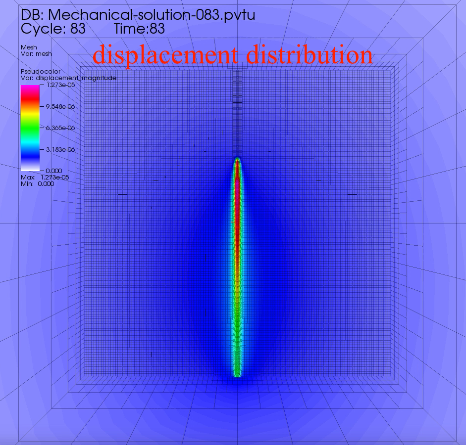

Screenshots of Some Case Studies



How to use :
After you installed the Deal.II library successfully in your Linux/Mac OS, follow the steps below to run a case study.
Project description
LPBF process tends to induce high residual stress in solidified regions. Defects induced by the residual stress,
such as cracks, warping and distortion, are main reasons for dimension errors and fabrication failures. The predominant reason
for these defects is the rapidly changing thermal gradient during thermal cycles in different regions and the stress accumulation
in deposited layers. To overcome this problem, a large number of experiments have been carried out through adjusting process parameters,
which is time consuming and costly. In addition, the aforementioned defects are mainly controlled by more than 100 process parameters.
Therefore, a numerical modeling and analysis of temperature and thermal stress fields during a fabrication process are needed to investigate
the relationship between process parameters and performances of the final part. The main process simulation includes
transient thermal and quasi-static mechanical material behavior. This simplification linearizes the coupled physical processes and can
significantly reduce the computational cost.
Introduction of SimuLPBF
This FE model provides a simulation tool to exhaustively record temperature fields of each time step and temperature history of each
point for stress-strain analysis and distortion evolution. This simulation tool can also be used to optimize process parameters in a more practical way.
This tool is mainly written in C++.
This research has the following features to implement a simulation of LPBF process at part level:
In summary, by using this simulation scheme, the temperature difference can be controlled within 5% compared with the static mesh strategy, while the overall simulation
efficiency can be improved by 12.6~18.6 times compared with the traditional static mesh strategy using a single processor, depending on the scale of the problem and number of CPU cores.
The applications of this simulation model can be implemented in many fields. In manufacturing, a full part-level simulation can be done by using this model to predict possible
design flaws before the real printing process. In designing, this simulation model can help to optimize the topology of the parts by evaluating thermal concentration regions which
may lead to distortions in the final parts. In academia , this simulation model can be used to optimize process parameters without conducting a real printing experiment and generate
a set of optimal printing parameters for following data-driven studies. In addition, the predicted temperature data can be used for further simulation of microstructure evolution at part level.
All related work can be found in the following publications:
[1] Zhibo Luo, and Yaoyao Zhao, 2019, "Efficient thermal finite element modeling of selective laser melting of Inconel 718," Computational Mechanics, pp. 1-25.
[2] Zhibo Luo, and Yaoyao Zhao, 2019, "Numerical simulation of part-level temperature fields during selective laser melting of stainless steel 316L,"
The International Journal of Advanced Manufacturing Technology, pp. 1-21.
[3] Zhibo Luo, and Yaoyao Zhao, 2017, "Numerical simulation of temperature fields in powder bed fusion process by using hybrid heat source model,"
28th Proc. Solid Freeform Fabrication Proceedings, Austin, TX.
Screenshots of Some Case Studies